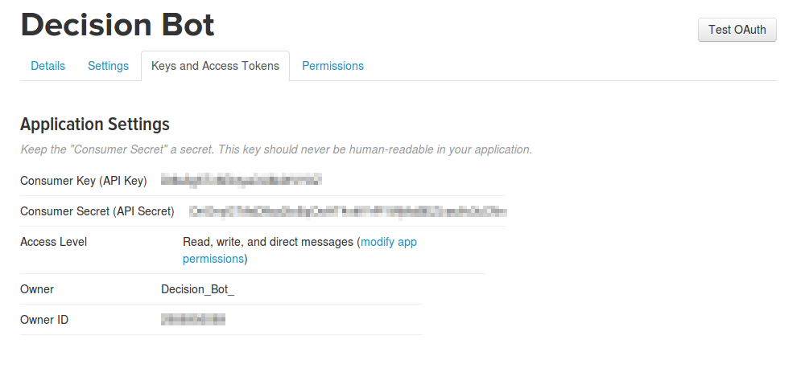
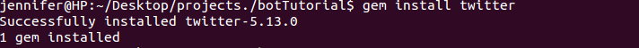
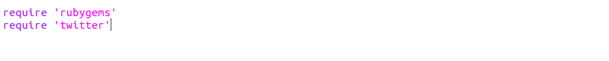
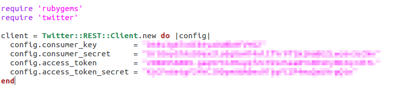
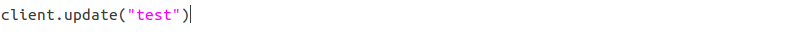
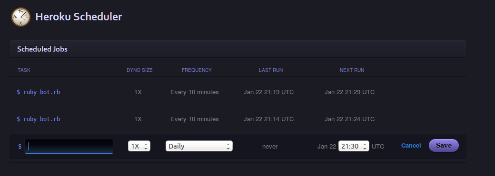

If you're a Twitter user, you've probably seen Twitter bots around. Some famous Twitter bots include DearAssistant, AccidentalHaiku, and Horse ebooks. In this tutorial you'll learn how to make your own Twitter bot using Ruby, the Twitter API, and Heroku. This tutorial assumes you know a bit about using the command line and basic programming.
Please note, I'm using my Linux operating system (Ubuntu) so some of the commands might be different for you, depending on what operating system you're using.
First, make sure you have Ruby installed. You can learn how to do that here. In this tutorial we'll be using the command line, so it's best to keep your files for this project in their own folder.
Before we get started, you need to make a Twitter account for your bot. Your account will need its own mobile number, but you can use Google Voice if you've already used your number for a Twitter account. Once you've made your account, head on over to Twitter Apps and click on "Create New App" and fill out the form. The name, description, and website don't really matter that much, so don't worry if you don't have a website or good name for your application. You can always change it later.
After this, you should be able to click on the "Keys and Access Tokens" to generate and view your tokens. This is how we'll authorize Twitter later on. Make sure you have tokens under the "Application Settings" and "Your Access Token" headings. You need to keep these keys secret. Give the account at least read and write permissions.
Next, make a file in your project folder with the ".rb" file extension. The one I'll be using will be called "bot.rb". For this project, we'll be using the Twitter Gem, so type "gem install twitter" into your command line.
Next, open up your ruby file in your editor. Since we need to use the Twitter Gem in our program, we have to require it before we do anything else.
Next, we need to authenticate the Twitter account we just made using the keys from earlier so that we can use Twitter's API. I have blurred out my keys, and you need to substitute your own.

To test that you're authenticated and ready to go, type in "ruby bot.rb" (this is how we'll run the program) into the command line. If you get an error about authentication, then your keys are incorrect. If nothing happens, then we're on the right track. You can now tweet from your account. Try this line of code and your twitter bot will make its first tweet. (Then feel free to delete the tweet.)
What you do next depends on what you want your bot to do. I'll leave this up to you. You can find the twitter gem's documentation here. Some great examples of using this gem are here.
After you've got your bot the way you want it, we want to set it up to run automatically. To do that, head on over to Heroku and sign up. You need to add a credit card number to your account to use the Heroku Scheduler (how we run the bot automatically), but the scheduler is free and I've never been billed for it. Then, install the Heroku Toolbelt so that we can use Heroku with the command line.
After that's all set up, go to your Heroku Dashboard and create a new app by clicking on the plus symbol in the upper right-hand corner. Then, follow the instructions provided using the command line to set up your git repository and deploy your bot to heroku. Then, in the command line, type "heroku addons:add scheduler" to add the Heroku Scheduler to your bot.
Then, go back to your dashboard and click on your app. You should be able to click on the Heroku Scheduler to add scheduled jobs to your bot, like so.
You can pretty much run your Twitter bot as often or seldom as you want, however, if you run your bot too much then you might get rate limited.
If your bot isn't running or working, run the command "heroku logs" in your command line to check what's going on.
After that, you're good to go! You can always tweak your bot a little bit and re-deploy to Heroku. Have fun!
Questions? Comments? Don't hesitate to contact me!